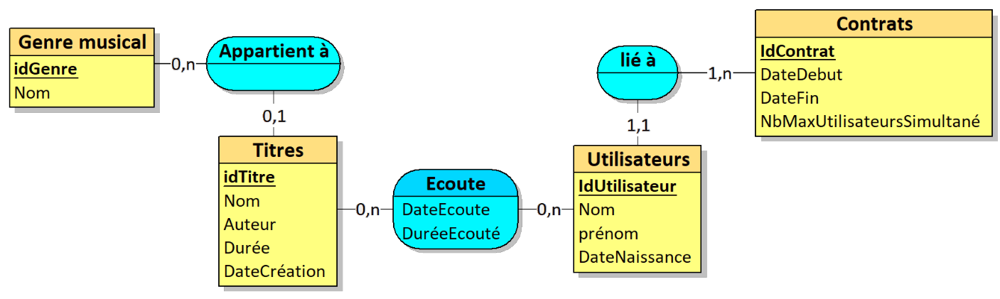
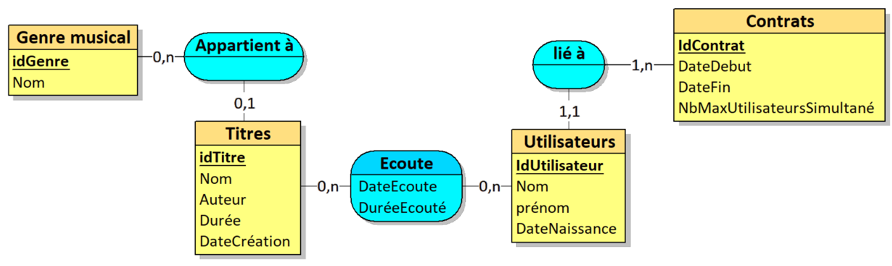

presentation
sujet (afficher)
Le projet Spotifi est un projet de base de donnée en groupe de 2 ou 3.
Le but est de créer une base de donnée pour une plateforme de streaming musical.
Le projet est divisé en plusieurs parties :
la conception de la base de donnée,
la création des tables,
l'insertion des données,
la création de formulaires et d'états.
1- Combien de titres et de genres sont disponibles dans la base ?
2- Combien de Titres M. Dupond a-t-il écouté ?
3- Quel est le genre musical le plus écouté par M. Dupond ?
4- Quelle est la durée moyenne d’écoute des morceaux ?
5- Nombre de personnes maximum liées à un même contrat ayant écouté de la musique le même
jour
?
6- Nombre de fois où des personnes liées à un même contrat ont écouté de la musique
simultanément le 14/10/2024 ?
7- Playlist de M. Dupond
8- Playlist basée sur le genre le plus écouté de M. Dupond
9- crée une playlist pour M. Dupond en se basant sur les titres les plus écoutés par tous
les
utilisateurs ayant un écart d’âge de plus ou moins 5 ans
10- Playlist basée sur les genres écoutés par M. Dupond


 
